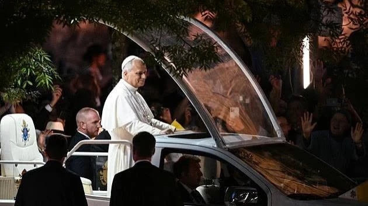

Du 25 au 28 septembre 2026, le pape Léon XIV effectue son premier voyage apostolique en France, à l'invitation d'Emmanuel Macron, des évêques français et de la directrice générale de l'UNESCO. C'est la première visite officielle d'un pape dans le pays depuis celle de Benoît XVI en 2008. Paris, Saint-Denis, Lourdes puis Metz : en quatre jours et vingt-six rendez-vous, le pontife américain parle de laïcité, de fin de vie, d'intelligence artificielle et d'Europe, devant des foules parmi les plus importantes jamais réunies en France pour un pape.
Élu le 8 mai 2025, Robert Francis Prevost, devenu Léon XIV, est le premier pape né aux États-Unis. Son voyage en France, placé sous la devise « Pour que le monde ait la vie », est le premier déplacement officiel d'un pape dans le pays depuis celui de Benoît XVI, du 12 au 15 septembre 2008. Celui-ci avait alors prononcé au Collège des Bernardins un discours resté célèbre sur la foi et la raison, puis célébré une messe devant 260 000 fidèles sur l'esplanade des Invalides.
Son prédécesseur François s'était bien rendu à Strasbourg en 2014, devant les institutions européennes, puis à Marseille en 2023 et à Ajaccio en 2024. Mais il avait insisté sur le fait qu'il ne s'agissait pas de visites officielles à la France. Le voyage de Léon XIV renoue donc avec une tradition de visites d'État interrompue depuis près de deux décennies.
Accueilli le vendredi 25 septembre par Emmanuel Macron, le pape s'est adressé aux responsables politiques, religieux et au corps diplomatique. Il a salué le « génie spirituel » de la France et sa devise républicaine, avant de livrer une définition de la laïcité qui a marqué les esprits : pour lui, une juste laïcité ne consiste pas à exclure la religion de l'espace public, mais sait en tirer profit comme d'une ressource éducative. Il a défendu dans la foulée la place de l'école catholique dans le paysage scolaire français.
Le discours a aussi abordé le débat sur la fin de vie : Léon XIV a mis en garde contre les « dangers » de « l'offre de mort programmée », une critique jugée « très diplomatique » de la loi sur l'aide à mourir par la sénatrice Laure Darcos. Il a enfin appelé à développer un discernement éthique face aux outils d'intelligence artificielle.
Le même jour, Léon XIV s'est exprimé au siège de l'UNESCO, une première depuis le discours historique de Jean-Paul II en 1980. Pendant une demi-heure, en français et en anglais, il a défendu une dignité humaine indépendante de toute logique d'« efficacité », alerté sur les risques de déshumanisation liés aux conflits, aux inégalités et à l'intelligence artificielle, et appelé à préserver la « liberté de penser » des jeunes à l'ère numérique. Il a surtout exhorté les États à ne pas abandonner le multilatéralisme, en pleine crise.
Accueil à l'Élysée, discours à l'UNESCO, vêpres à Notre-Dame de Paris, veillée avec les jeunes au Stade de France.
Messe en plein air place de la Concorde, puis départ pour le sanctuaire de Lourdes.
Messe sur la Prairie, face à la grotte des apparitions ; rencontre avec les malades.
Rencontre interreligieuse et discours sur l'Europe au centre des congrès Robert-Schuman, messe pour la paix à la cathédrale Saint-Étienne.
En fin d'après-midi, le pape a présidé les vêpres à Notre-Dame de Paris, entouré de 8 000 évêques, prêtres, diacres, consacrés et séminaristes venus de toute la France : c'était la première visite d'un pape dans la cathédrale depuis l'incendie de 2019 et sa réouverture en décembre 2024. Le soir, au Stade de France, 80 000 jeunes ont participé à une veillée de prière, marquée par une longue ovation en l'honneur des jeunes catéchumènes, signe d'un regain de demandes de baptême chez les jeunes adultes.
Le samedi 26 septembre, la messe célébrée place de la Concorde a réuni environ 800 000 fidèles, massés sur plus de deux kilomètres jusqu'à la place de l'Étoile, pour plus de 600 000 inscrits. Dans son homélie, Léon XIV a interrogé la foule sur ce qu'elle cherche vraiment dans la vie, et l'a invitée, face au découragement, à apporter l'espérance.
Le pape a ensuite rejoint Lourdes, où il a célébré le dimanche 27 septembre une messe sur la Prairie du sanctuaire, face à la grotte des apparitions, devant environ 150 000 fidèles, un millier de prêtres et 150 évêques. Il y a décrit Lourdes comme un lieu « béni d'espérance, même au cœur de l'épreuve », avant de rencontrer les pèlerins malades et handicapés et leurs accompagnants à l'Accueil Notre-Dame.
Le voyage comporte aussi l'une de ses séquences les plus délicates : une rencontre avec des victimes d'abus sexuels commis dans l'Église. Le sujet reste une plaie ouverte en France depuis le rapport de la commission Sauvé (CIASE), qui estimait en 2021 à 330 000 le nombre de personnes victimes de violences sexuelles dans l'Église depuis 1950.
Le voyage s'achève le lundi 28 septembre à Metz, où le pape doit présider une rencontre interreligieuse, prononcer un discours sur l'Europe au centre des congrès Robert-Schuman, puis célébrer une messe pour la paix à la cathédrale Saint-Étienne. Le choix est symbolique : Robert Schuman, député de Moselle et auteur de la déclaration du 9 mai 1950 qui a lancé la construction européenne, est à la fois un « père de l'Europe » et un catholique fervent, déclaré vénérable par l'Église en 2021.
« Le pape, combien de divisions ? », aurait ironisé Staline. Ce voyage montre au contraire toute la force du soft power du Saint-Siège : un État de 44 hectares sans armée, mais doté d'un réseau diplomatique mondial et d'une autorité morale qui lui permet de s'adresser à la fois à un État laïque, à une organisation internationale comme l'UNESCO et à l'Europe entière.
Il éclaire aussi plusieurs débats français : la définition de la laïcité, la loi sur la fin de vie, la place de l'école privée, la réponse aux abus dans l'Église et, à Metz, l'héritage chrétien de la construction européenne à l'heure où le projet européen est contesté.